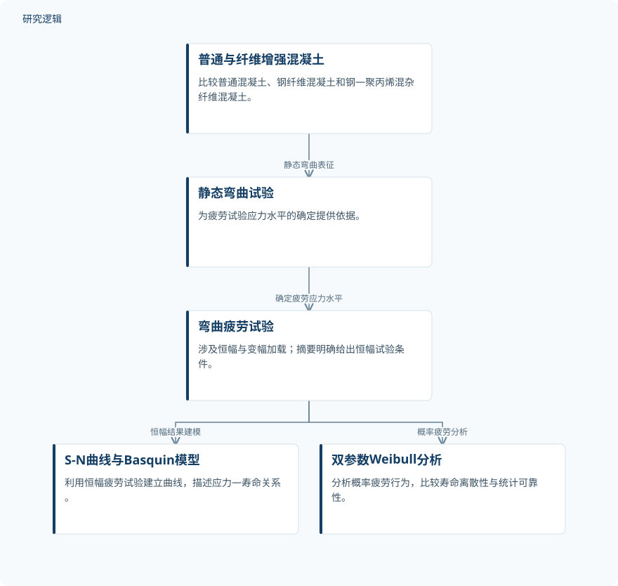

摘要解读
混杂纤维混凝土疲劳表征：S-N曲线、威布尔可靠性建模与变幅荷载效应
Fatigue characterization of hybrid fibre-reinforced concrete: S-N curve development, Weibull reliability modelling, and effect of variable amplitude loading
解读更新 2026-10-16 15:51 · 依据公开摘要整理，未核验全文细节
混杂纤维能否让混凝土既承受更多次循环荷载，又表现出更稳定的疲劳寿命？这项研究将疲劳寿命与统计可靠性并列考察，提示“寿命最高”和“离散性较低”未必对应同一种配比。
文章目录
抗疲劳不只看寿命，也要看离散性
疲劳荷载是影响结构混凝土耐久性与服役寿命的重要因素。针对循环作用下的性能退化，研究比较普通混凝土、单一钢纤维混凝土与钢—聚丙烯混杂纤维混凝土，关注纤维增强能否改善抗疲劳表现。
本文依据完整摘要解读。研究同时采用寿命曲线与概率分布描述疲劳行为，因此阅读重点不仅是材料能够承受多少次循环，还包括寿命结果是否更集中、统计可靠性如何变化。
弯曲疲劳试验结合两类寿命模型
研究考察七种混合料：普通混凝土，以及纤维体积分数分别为0.5%、1.0%和1.5%的钢纤维混凝土与混杂纤维混凝土。混杂体系采用钢纤维和聚丙烯纤维，摘要给出的配比为75:25。
研究对象为混凝土棱柱体，涉及恒幅与变幅弯曲加载。疲劳应力水平依据静态弯曲试验确定；恒幅试验的应力水平为0.6–0.9，应力比为0.1，频率为5 Hz。作者据此建立S-N曲线，以Basquin模型描述应力—寿命关系，并采用双参数Weibull分布分析概率疲劳行为。
依据摘要整理的疲劳表征流程


概括静态弯曲试验、疲劳加载与寿命建模之间的关系，仅依据摘要整理，不是论文原图。
下载 SVG图示关系说明
实线表示相邻阶段的信息流，虚线表示跨阶段联系或反馈。
普通与纤维增强混凝土 → 静态弯曲试验：静态弯曲表征；静态弯曲试验 → 弯曲疲劳试验：确定疲劳应力水平；弯曲疲劳试验 → S-N曲线与Basquin模型：恒幅结果建模；弯曲疲劳试验 → 双参数Weibull分析：概率疲劳分析
混杂纤维的寿命优势与可靠性差异
摘要报告，所有混合料的疲劳寿命均随应力水平升高而降低，但混杂纤维材料表现出明显延长的疲劳寿命。作者将纤维的协同增强作用与裂缝桥联能力增强、裂缝扩展延缓及刚度保持改善联系起来。
Basquin模型与试验结果吻合良好；Weibull分析表明，与普通混凝土相比，纤维混凝土的寿命离散性降低、可靠性改善。其中，1.5%混杂纤维组具有最高疲劳寿命，并表现出改善的循环损伤抵抗能力；1.0%混杂纤维组则呈现相对较低的寿命离散性和较好的统计可靠性。寿命最高与统计表现更稳定，应分开理解。
摘要尚不能界定的验证范围
摘要未报告各组试件数量、重复试验安排、具体寿命数据、模型参数或拟合评价指标，因此无法仅据摘要判断寿命增益幅度、组间差异的统计显著性，以及可靠性估计的不确定性。
虽然研究涉及变幅加载，但摘要未交代加载序列及其独立比较结果，也未说明模型在其他工况中的验证范围。这些属于当前资料无法判断的内容，不能据此认定论文没有开展相关工作；摘要也未明确指定综合性能最优的唯一配比。
阅读启发：把寿命水平与可靠性并排看
阅读启发：后续阅读原文时，可重点核对不同配比的寿命分布、Weibull参数及其不确定性，理解为何最高寿命与较低离散性分别出现在不同混杂纤维组。另一个值得追问的问题是：变幅加载是否改变了这些比较关系？这些是摘要引出的阅读方向，而不是已经得到验证的工程选材结论。
以上为本站阅读启发与建议，不是论文已验证的结论。